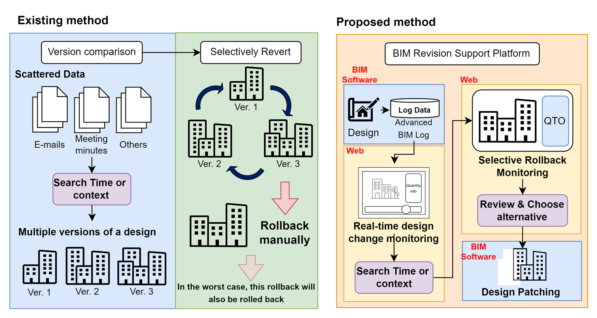

1Department of Architecture and Architectural Engineering, Yonsei University, Seoul, Korea
Teaser of Design patching process with our method
About
The BIM Design Revision Management Platform is a lightweight, web-based system designed to support real-time tracking, selective rollback, and automated patching of design changes in collaborative BIM environments.
Unlike traditional backup-based workflows or fragmented model comparisons, our platform utilizes an Advanced BIM Log—a structured, time-sequenced format that captures geometric and property-level changes at the object level. Through an interactive timeline interface, users can monitor design evolution, preview the effects of reverting specific parts of the model, and apply those revisions automatically without affecting unrelated components.
This approach eliminates the inefficiencies of manual rework and dense command logs, empowering designers to explore alternative design decisions, reduce overhead, and streamline collaboration—all without requiring proprietary BIM software or licenses.

Advanced BIM Log
This approach eliminates the inefficiencies of manual rework and dense command logs, empowering designers to explore alternative design decisions, reduce overhead, and streamline collaboration—all without requiring proprietary BIM software or licenses.
This approach eliminates the inefficiencies of manual rework and dense command logs, empowering designers to explore alternative design decisions, reduce overhead, and streamline collaboration—all without requiring proprietary BIM software or licenses.
Quantity Take Off
Partially-Visualization
This approach eliminates the inefficiencies of manual rework and dense command logs, empowering designers to explore alternative design decisions, reduce overhead, and streamline collaboration—all without requiring proprietary BIM software or licenses.
Design Patching
This approach eliminates the inefficiencies of manual rework and dense command logs, empowering designers to explore alternative design decisions, reduce overhead, and streamline collaboration—all without requiring proprietary BIM software or licenses.